Račići
Jaslice ne smatramo mjestom boravka „na čuvanju”. Već od najranije dobi djeci nudimo raznovrsne aktivnosti koje potiču sva razvojna područja.
Našička 6 · jasliceDječji vrtić Nemo privatna je odgojno-obrazovna ustanova osnovana 2005. godine. U jaslicama u Našičkoj 6 i vrtiću u Našičkoj 12 brinemo o djeci od navršene prve godine do polaska u školu.
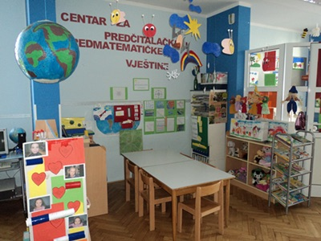
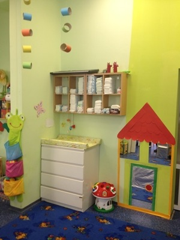
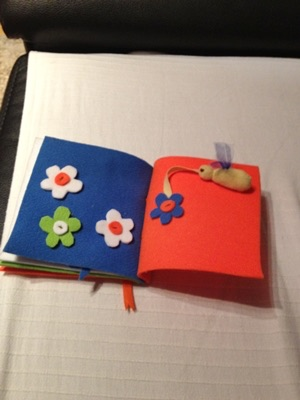
U vrtiću se provode njega, odgoj, obrazovanje, zdravstvena zaštita, prehrana i socijalna skrb djece rane i predškolske dobi. Broj djece u skupinama odgovara normativu koji je odobrio Gradski ured za obrazovanje.
Tri jasličke skupine za djecu od navršene 1. do 3. godine i jedna mješovita vrtićka skupina za djecu od 3 godine do polaska u školu.
Jaslice ne smatramo mjestom boravka „na čuvanju”. Već od najranije dobi djeci nudimo raznovrsne aktivnosti koje potiču sva razvojna područja.
Našička 6 · jasliceHolistički pristup: tjelesni, spoznajni, emocionalni i socijalni razvoj utječu jedan na drugoga i razvijaju se usporedno.
Našička 6 · jaslicePotičemo samostalnost u oblačenju, obuvanju, jelu i pranju ruku te razvoj govora. S navršene 2 godine djeca sudjeluju u dijelu sportskog programa.
Našička 6 · jasliceU mješovitoj skupini djeca brinu jedni za druge i uče jedni od drugih, a svako dijete skupini doprinosi na svoj način.
Našička 12 · vrtićTri jasličke skupine: Račići, Ribice i Školjkice (od navršene 1. godine do 3 godine).
Mješovita vrtićka skupina Dupini (od 3 godine do polaska u školu).
Priča o Dječjem vrtiću Nemo nastala je na temelju mog podrijetla i ogromne ljubavi prema moru. More je prozor u svijet… Vrtić je djetetu također prozor u svijet. U vrtiću djeci svakodnevno pružamo mogućnost novih spoznaja i gradimo njihov svijet, ali i mi odrasli svakodnevno učimo od naše djece.
Irena Burić, osnivačica Dječjeg vrtića Nemo
Vizija: mjesto sretnog dječjeg odrastanja.
Prostor se stalno promišlja i obogaćuje, uvijek s rastom i razvojem djeteta na umu. Odaberite skupinu.
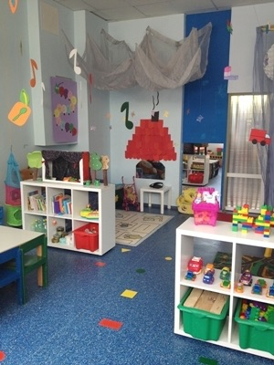
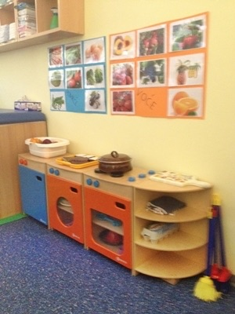
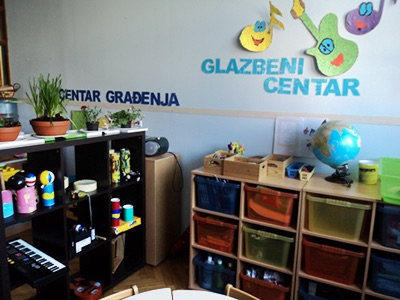
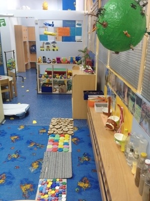
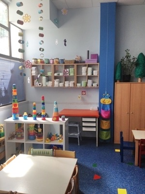
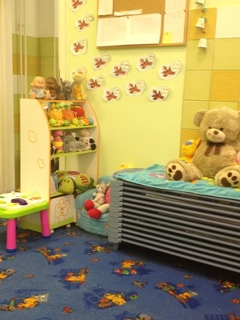
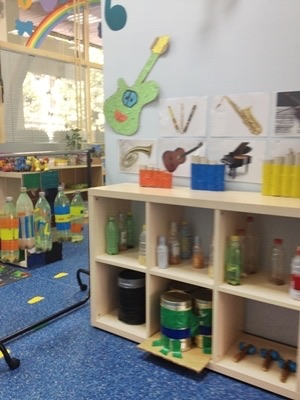
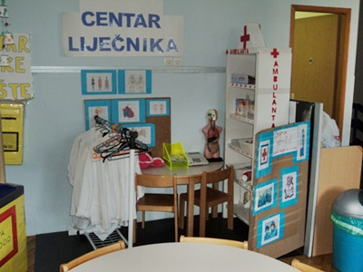
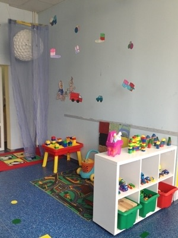
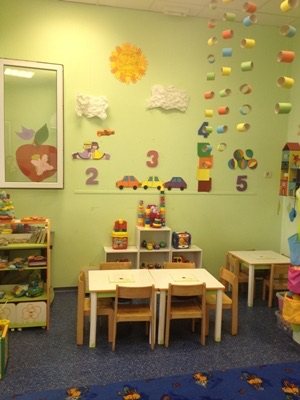
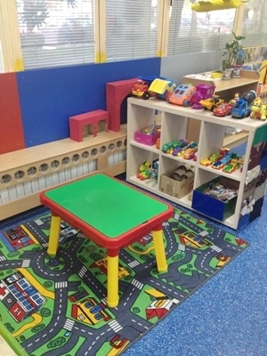
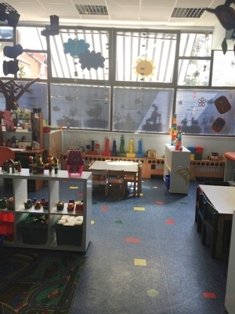
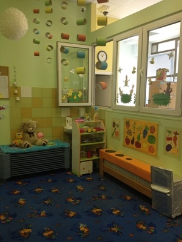
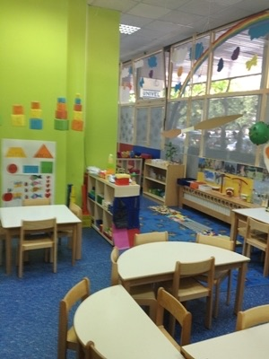
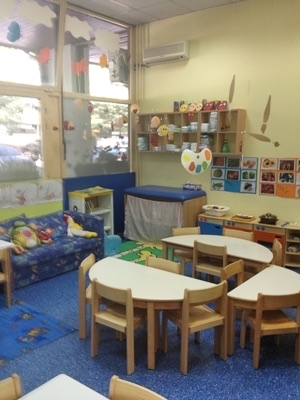
Ograđeno igralište s višefunkcionalnom kućicom, klackalicama, antistresnom tartan podlogom i dvorac-konstrukcijom s toboganom, kako bi svakodnevni izlazak na svježi zrak bio siguran i ugodan.
Koristimo naše dvorane, u kojima se djeca slobodno kreću uz glazbu, igre i zabavu, pa dan ostaje dinamičan i kad nije moguće izaći van.
Prehrana se planira prema potrebama djeteta za energijom, vitaminima i mineralima, a najbolje piće je voda.
Jelovnici su prikazani tjedno, po danima i obrocima. Izvješeni su u garderobama, a šaljemo ih i e-poštom svim roditeljima. Više o prehrani
Dijete upisujemo tijekom cijele godine ako imamo slobodno mjesto. Prvi korak je predbilježba.
Imate pitanje o djetetu, programima ili upisu? Javite se telefonom ili e-poštom.